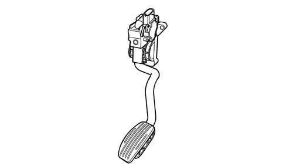

1068A ACCELERATOR PEDAL CONTROL
- Path
- Descriptions > 10 ENGINE UNIT > 1068 ACCELERATOR CONTROLS > 1068A ACCELERATOR PEDAL CONTROL
- Kind
- system description
- Applies to
- engines: 2.0 JTS, 3.2 V6; all production periods
- Interactive page
- https://sloeber94.github.io/elrnDB-aGt/en/#/125000291
Applies to: engines: 2.0 JTS; all production periods
CONSTRUCTION FEATURES
ACCELERATOR PEDAL WITH BUILT-IN POTENTIOMETER
The accelerator pedal is fitted with two integrated potentiometers:
- one main one
- one safety one.
The injection control unit implements the following 'recovery' strategies:
- if there is a fault with one of the two potentiometers, a throttle opening of up to 40° is allowed for a long period
- if both of the potentiometers fail completely, the throttle opening is excluded.

Applies to: engines: 3.2 V6; all production periods
CONSTRUCTION FEATURES
ACCELERATOR PEDAL WITH BUILT-IN POTENTIOMETER
The accelerator pedal is fitted with two integrated potentiometers:
- one main one
- one safety one.
The injection control unit implements the following 'recovery' strategies:
- if there is a fault with one of the two potentiometers, a throttle opening of up to 40° is allowed for a long period
- if both of the potentiometers fail completely, the throttle opening is excluded.